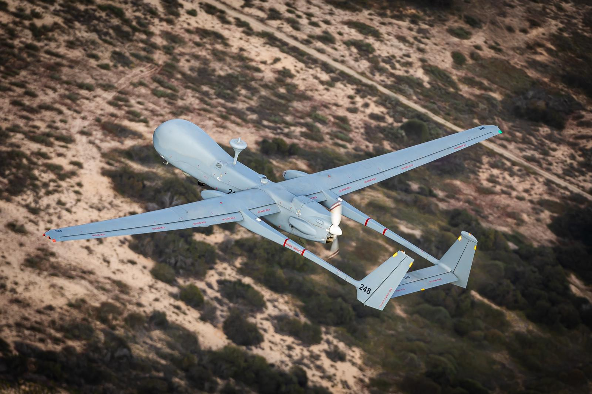
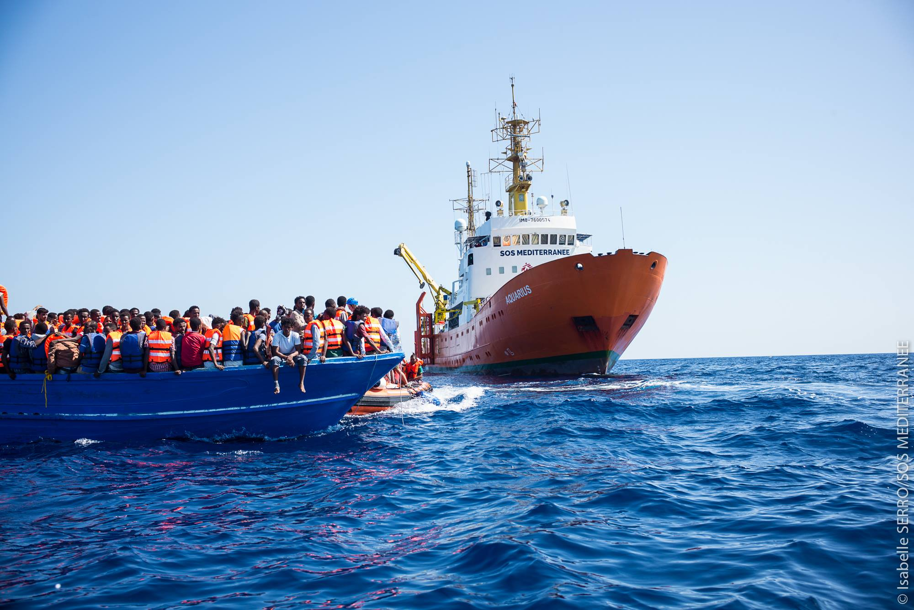

Cliquez sur les points colorés pour découvrir les différents acteurs
Frontex
🔴 Surveillant
Localisation : Varsovie, Pologne
Statut : Agence européenne
Rôle : Coordination de la surveillance aux frontières extérieures de l'UE
Technologies : Drone HeronDrones israéliens utilisés pour la surveillance et la collecte de renseignements. Frontex, l'agence européenne de garde-frontières, a signé un contrat avec Airbus pour le déploiement et la maintenance de ces drones afin de renforcer la surveillance des frontières extérieures de l'UE. , capteurs thermiques, systèmes d'analyse d'image
Contexte : Acteur central dans le déploiement technologique à grande échelle. L’agence fournit drones, financement, et expertise logistique à l’Italie dans le cadre du programme Eurosur. Elle est critiquée pour les "pushbacks" illégauxRenvoi forcé de migrants vers un pays sans évaluation individuelle ni possibilité de demander l’asile, en violation du droit international. et un manque de transparence.
Budget annuel de Frontex

Le budget de Frontex a connu une croissance significative, montant jusqu'à 922 millions d'euros en 2024 . Cette augmentation reflète les besoins croissants en matière de gestion des frontières extérieures de l'Union européenne.
Police aux Frontières (P.A.F.)
🔴 Surveillant
Localisation : Alpes-Maritimes, France
Statut : Forces de l'ordre françaises
Rôle : Contrôle des flux migratoires et surveillance des frontières terrestres, notamment alpines
Technologies : Drones tactiquesDrones de petite taille, utilisés pour les opérations de reconnaissance et de surveillance en temps réel dans des zones difficiles d’accès comme les montagnes., caméras, jumelles, dispositifs radio de coordination
Contexte : Acteur clef dans la lutte contre les franchissements irréguliers dans les régions montagneuses. La P.A.F. utilise les drones pour anticiper les trajectoires de passage et intervenir rapidement. Si leur efficacité opérationnelle est reconnue, leur usage suscite une vive controverse, notamment en raison de leur rôle dans les interceptions en haute altitudeLes interceptions dans les cols alpins sont particulièrement risquées et exposent les migrants à des dangers liés au froid et à la chute, sans toujours permettre un recours ou un accompagnement humanitaire.. La frontière alpine devient ainsi un théâtre de surveillance renforcée, au détriment, selon certains, des droits fondamentaux.
Évolution des interpellations dans les Alpes-Maritimes
| Année | Nombre d’interpellations / non-admissions |
|---|---|
| 2017 | 44 433 non-admissions à la frontière franco-italienne |
| 2021 | +30 000 migrants interpellés |
| 2023 | 44 100 interpellations enregistrées |
Entre 2018 et 2024, les interpellations de migrants dans les Alpes ont considérablement augmenté, en parallèle du renforcement des dispositifs technologiques. Ces pratiques font l’objet de critiques récurrentes de la part d’ONG qui dénoncent des conditions inhumainesManque d’abris, températures extrêmes, absence d’accès aux soins ou à des services juridiques sur la frontière franco-italienne. et une stratégie de dissuasion plus que de protection.
Migrants
🟡 Surveillés
Localisation : Méditerranée, Balkans, Alpes
Statut : Acteurs en mouvement, souvent sans statut légal reconnu
Rôle : Traversées pour fuir la guerre, la pauvreté ou les catastrophes climatiques
Technologies : Applications GPSDes apps comme Maps.me ou Komoot sont utilisées pour naviguer discrètement sur les routes migratoires., téléphones chiffrés, réseaux sociaux, stratégies d’évitement de la surveillance
Contexte : Les migrants sont les premiers impactés par le déploiement technologique. Les drones rendent les traversées plus dangereuses en forçant les groupes à emprunter des routes secondaires (montagne, nuit), souvent fatales. La surveillance réduit l’accès à l’asile, invisibilise les violations de droits, et renforce le sentiment d’abandon.
Risques psychologiques : États de stress post-traumatique, anxiété liée à l'invisibilité des menaces (drones, capteurs), perte de sommeil, peur constante de l’interception.
Estimations des morts en Méditerranée centrale
| Année | Morts ou disparus |
|---|---|
| 2020 | 1 401 |
| 2021 | 1 553 |
| 2022 | 1 417 |
| 2023 | 2 498 |
Airbus
🟢 Concepteur
Localisation : Toulouse, France
Statut : Multinationale européenne
Rôle : Fourniture de drones et services associés à Frontex
Technologies : Drone Heron 1Drone de moyenne altitude et longue endurance développé à l’origine par Israel Aerospace Industries, opéré par Airbus pour Frontex., systèmes de communication satellitaire, maintenance, pilotage à distance
Contexte : Airbus joue un rôle-clé dans la surveillance des frontières européennes en opérant pour Frontex des vols de drones Heron depuis la Crète ou Malte. Ces missions incluent la collecte d’images, le suivi de cibles maritimes et la transmission en temps réel à Frontex. Le partenariat a été critiqué pour son manque de transparence et sa possible implication dans des refoulements illégaux.
Contrat majeur : En 2021, Airbus a remporté un contrat de 50 millions d’euros pour fournir et opérer des drones MALE (moyenne altitude, longue endurance) au service de Frontex.
Drone Heron 1
“Nous opérons selon les besoins de Frontex, dans le respect des réglementations européennes.”
ONG
🔵 Défenseur des droits
Localisation : France, Méditerranée, Balkans
Organismes : Amnesty International, ANAFE, Sea-Watch, SOS Méditerranée, Médecins Sans Frontières
Rôle : Secours, observation et plaidoyer pour la protection des droits des personnes exilées
Moyens : Documentation des abusCollecte de témoignages, vidéos et rapports sur les violations des droits humains aux frontières., pression politique, interventions juridiques, missions de sauvetage, mobilisation citoyenne
Contexte : Les ONG jouent un rôle essentiel de contre-pouvoir. Elles surveillent l’usage des drones par les autorités, dénoncent les refoulements illégauxRenvois sans procédure légale ni évaluation individuelle, souvent orchestrés à partir d’images de drones. et demandent des alternatives plus humaines. Elles font face à des obstacles croissants : criminalisation de la solidarité, restrictions d’accès aux zones surveillées, manque de transparence des opérations officielles.
Intervention en mer
"La surveillance ne doit pas violer les droits des personnes en mouvement."
ONG
🔵 Défenseur des droits
Localisation : France, Méditerranée, Balkans
Organismes : Amnesty International, ANAFE, Sea-Watch, SOS Méditerranée, Médecins Sans Frontières
Rôle : Secours, observation et plaidoyer pour la protection des droits des personnes exilées
Moyens : Documentation des abusCollecte de témoignages, vidéos et rapports sur les violations des droits humains aux frontières., pression politique, interventions juridiques, missions de sauvetage, mobilisation citoyenne
Contexte : Les ONG jouent un rôle essentiel de contre-pouvoir. Elles surveillent l’usage des drones par les autorités, dénoncent les refoulements illégauxRenvois sans procédure légale ni évaluation individuelle, souvent orchestrés à partir d’images de drones. et demandent des alternatives plus humaines. Elles font face à des obstacles croissants : criminalisation de la solidarité, restrictions d’accès aux zones surveillées, manque de transparence des opérations officielles.
Intervention en mer
"La surveillance ne doit pas violer les droits des personnes en mouvement."